[Ders notları atlandı]
FIR Filtreleri
Bir sinyalin içinden belli frekansları ayıklama işlemine filtreleme adı veriliyor; çeşitleri alçak geçiren (low-pass), yüksek geçiren (high-pass), ve bant geçiren (band-pass) filtreleri. Alçak geçiren filtrelerle mesela 2 kHz üstündeki tüm frekanları sinyalden çıkartmak istiyorsak eşik değeri 2 kHz’lük olan bir filtre kullanabiliriz, yüksek geçiren bunun tersini yapabilir. Bant geçiren ise sadece belli bir aralıktaki frekanslara izin vermek için kullanılır, mesela sinyalde 4 ve 5 kHz arası frekanslar kalsın istiyorsak bir bant geçiren filtre kullanırız.
Bu yazıda sonlu dürtü yanıtlı (finite impulse response -FIR-) adı verilen sayısal filtreleri kullanacağız, bu filtreler tipik olarak sonlu sayıda katsayı olarak hesaplanırlar, sonra bu katsayılar bir evrişim (convolution) operasyonu ile sinyale uygulanır.
FIR filtre tasarımını kolaylaştıran en önemli numara evrişim ile ayrıksal Fourier transformu arasındaki bir ilişkiye dayanıyor. Bir \(x\)’e evrişimle bir \(h\) filtresi uygulayacağımızı düşünelim, ve bu bize \(y = x * h\) sonucunu verecek. İlişki şudur ki eğer \(x\) ve \(h\)’nin Fourier transformunu alırsak \(x * h\) işlemi “frekans yöresinde (frequency domain)’’ \(X \cdot H\) çarpımına dönüşür, yani frekans yöresindeki çarpım işlemi zaman yöresindeki evrişim işlemine eşittir [1, sf. 161].
\[ x(n) * h(n) \leftrightarrow X(\theta)H(\theta)\]
ki \(X\) ve \(H\), \(x,h\)’nin Fourier transformu.
İspat
Ayrıksal evrişim formülünü hatırlarsak,
\[ y(n) = x(n) * h(n) = \sum_{m=-\infty}^{\infty} x(m) h(n-m) \]
Eşitliğin iki tarafının Fourier transformunu alalım, \(y(n)\)’nin transformu \(Y(\theta)\) olsun,
\[ Y(\theta) = \sum_{n=-\infty}^{\infty} \bigg[ \sum_{m=-\infty}^{\infty} x(m) h(n-m) \bigg] e^{-j\theta n} \]
Toplamların yer değiştirebilme özelliğini kullanırsak,
\[ = \sum_{m=-\infty}^{\infty} x(m) \sum_{n=-\infty}^{\infty} h(n-m) e^{-j\theta n} \]
Şimdi \(k = n-m\) tanımlayalım,
\[ = \sum_{m=-\infty}^{\infty} x(m) \sum_{k=-\infty}^{\infty} h(k) e^{-j\theta (k+m)} \]
\[ Y(\theta) = \sum_{m=-\infty}^{\infty} x(m) e^{-j\theta m} \sum_{k=-\infty}^{\infty} h(k) e^{-j\theta k} \]
Son ifadede \(x\) ve \(h\)’nin ayrı ayrı Fourier transformlarını elde etmiş olduk, ve bu transformlar birbiriyle çarpım halindeler. İspat tamamlandı, gerçekten de evriştirilen iki öğenin arasındaki ilişki ayrı ayrı Fourier transformu üzerinden çarpım haline geliyor.
Bu özellik filtre tasarımında son derece faydalı: çünkü eğer belli frekansları elemek istiyorsak bunu yapmanın en rahat yolu frekans yöresinde öyle bir \(H\) tanımlamak ki \(X\)’in bazı bölgelerini olduğu gibi bıraksın diğerlerini sıfırlasın. Bu fonksiyon istenen yerlerde 1 değerine diğer yerlerde 0 değerine sahip olan bir fonksiyondan ibarettir. Fonksiyon bir dikdörtgene benzer, ki bu sebeple ona “tuğla duvarı (brickwall)’’ deniyor. Bu tuğla duvarının önemli bir avantajı (ters Fourier transformu ile) zaman yöresine geçiş yapıldığında yine basit bir fonksiyon olması, bu ünlü \(\mathrm{sinc}\) fonksiyonudur,
\[ \mathrm{sinc} (x) = \frac{\sin(x)}{x}\]
x=np.linspace(-10.0,10.0,100)
y=np.sinc(x)
plt.plot(x,y);
plt.savefig('compscieng_1_24_14.png')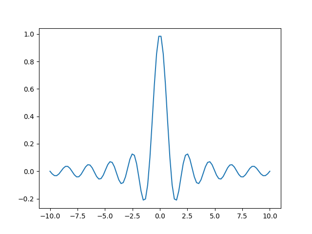
Sayısal olarak geçişi yapalım, bir kısmı 1 gerisi 0 olan tuğla duvarı
tanımlayıp numpy.fft.ifft ile \(h\)’yi elde edelim,
H = np.zeros(242)
H[128:142] = 1.
plt.figure()
plt.plot(H)
plt.savefig('compscieng_1_24_02.png')
h1 = np.fft.ifft(H,140)
h = np.real(np.fft.ifftshift(h1))
plt.figure()
plt.plot(h)
plt.savefig('compscieng_1_24_01.png')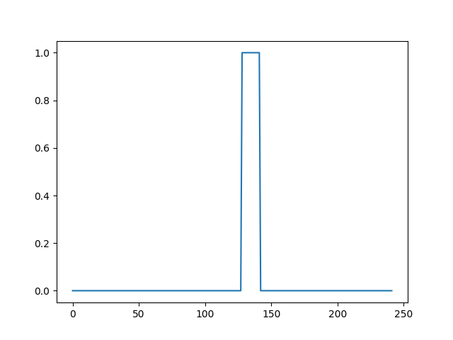 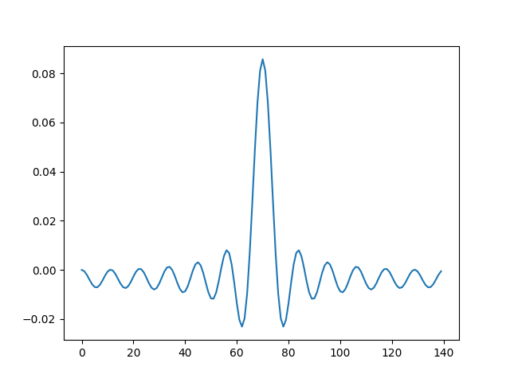
İspat
Diyelim ki frekans yöresinde tanımlı \(H(\omega)\)’nin tuğla duvarı şekli var [3, sf. 247], öyle ki sıfırda ortalanmış ve \(-\omega,\omega\) arasındaki bir bölgede fonksiyon 1, diğer yerlerde 0, yani
\[ H(\omega) = \left\{ \begin{array}{ll} 1, & -\omega_c \le \omega \le \omega_c \\ 0, & \omega_c \le |\omega| \end{array} \right. \]
Bu fonksiyonun zaman yöresindeki karşılığını analitik olarak bulalım. Ters Fourier transformu,
\[ h(t) = \frac{1}{2\pi} \int_{-\infty}^{\infty} H(\omega) e ^{j\omega t} \mathrm{d} \omega = \frac{1}{2\pi} \int_{-\omega_c}^{\omega_c} e ^{j\omega t} \mathrm{d} \omega \]
\[ = \frac{1}{2\pi} \frac{1}{jt} (e ^{j\omega_c t} - e ^{-j\omega_c t}) = \frac{1}{\pi t} \sin(\omega_c t) \]
\[ = \frac{\omega_c}{\pi} \frac{\sin(\omega_c t)}{\omega_c t} = \frac{\omega_c}{\pi} \mathrm{sinc}(\omega_c t) \]
\(\mathrm{sinc}\)’e erişmiş olduk. Ayrıksal ortamda
\[ h[i] = \frac{\sin(2\pi f_c i)}{i \pi}\]
Bu fonksiyonu bir sinyal ile evriştirince ona frekans filtresi uygulamış oluruz, sadece \(f_c\) altındaki frekanslara izin veren alçak geçiren (low-pass) filtreyi ederiz [2, sf. 285].
Fakat bir problem var, \(\mathrm{sinc}\) fonksiyonu sıfır genliğe erişmeden eksi ve artı sonsuzluğa sürekli devam eder. Bu sonsuz uzantı sayısal ortamda kullanışlı değil. Bunun için fonksiyonu bize sıfırda ortalanmış \(M+1\) tane katsayı değeri bırakacak şekilde kırpacağız (\(M\) çift sayı olmalı, sıfırda ortalanınca geri kalan katsayılardan her iki yönde eşit sayıda olması için), ve geri kalan tüm \(\mathrm{sinc}\) değerleri sıfır kabul edilecek.
Bir diğer problem sıfırda ortalama demek negatif indisler kullanmak demek, bu bilgisayarlar için problemli; o sebeple her şeyi \(M/2\) sağa kaydırıyoruz.
Fakat kırpmanın bir yan etkisi şudur; kırpma çok keskin bir şekilde yapıldığı için bu fonksiyonda ani bitiş (abrupt end) yaratıyor ve bu frekans yöresinde pürüzlere yol açıyor.
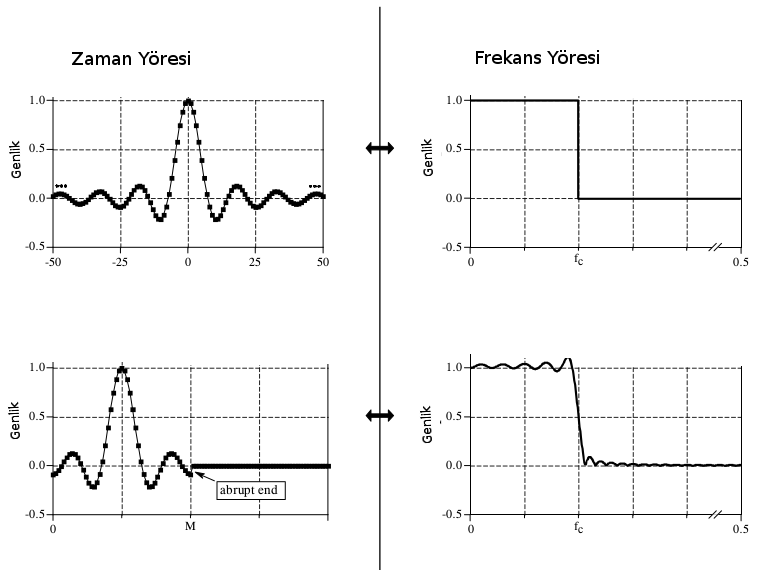
Bu problemin bir çözümü pencereleme fonksiyonu kullanmak, ve filtreleme yapacak çekirdeği bu pencereyle çarpıp ani geçişi yumuşatmaya uğraşmak. Hamming penceresi bir seçenek,
\[ w[i] = 0.54 - 0.46 \cos (2\pi i / M) \]
Nihai filtre
\[ h[i] = K \frac{\sin(2\pi f_c (i-M/2))}{i-M/2} \bigg[ 0.54 - 0.46 \cos (2\pi i / M) \bigg] \]
Kodları altta görüyoruz,
import scipy, matplotlib.pyplot as plt
import numpy as np
def hamming(window_size):
N = window_size;
output = np.zeros((N, 1));
if np.mod(N, 2) == 0 :
m = np.fix(N / 2)
n = m
else:
m = np.fix(N / 2)+1;
n = m-1;
window = 0.54 - 0.46 * np.cos(2*np.pi*(np.arange(m)) / (N-1))
tmp1 = window[:int(m)]
tmp2 = window[np.arange(int(n)-1,-1,-1)]
return np.hstack((tmp1,tmp2))
def sinc_filter_low(order, fc1, fs):
Fc1 = fc1 / np.float(fs)
M = order
B = np.zeros((M+1, 1))
window = hamming(M+1)
for i in range(M+1):
if 2 * i == M:
B[i] = 2*np.pi*Fc1
else:
tmp1 = 2*np.pi*Fc1 *(i-(M/2.))
tmp2 = (i-(M/2.))
B[i] = np.sin(tmp1) / tmp2
B[i] = B[i] * window[i]
return B / np.sum(B)
def sinc_filter_high(order, fc1, fs):
Fc1 = fc1 / np.float(fs)
M = order
B = np.zeros((M+1, 1))
window = hamming(M+1)
for i in range(M+1):
if 2 * i == M:
B[i] = 2*np.pi*Fc1
else:
tmp1 = 2*np.pi*Fc1 *(i-(M/2.))
tmp2 = (i-(M/2.))
B[i] = np.sin(tmp1) / tmp2
B[i] = B[i] * window[i]
B = B / np.sum(B)
B = -B
B[(M/2)] = B[(M/2)] + 1
return B
def sinc_filter_band(order, fc1, fc2, fs):
M = order
A = sinc_filter_low(order, fc1, fs).T[0]
B = sinc_filter_high(order, fc2, fs).T[0]
output = A+B
output = -output
output[(M/2)] = output[(M/2)] + 1.
return output
def plotSpectrum(y,Fs):
n = len(y) # sinyal uzunlugu
k = np.arange(n)
T = n/Fs
frq = k/T # frekansin her iki kismi
frq = frq[range(n/2)] # frekansin tek tarafi
Y = scipy.fft(y)/n # fft hesaplamak ve normalizasyon
Y = Y[range(n/2)]
plt.plot(frq,np.abs(Y),'r') # spektrumu grafiklemek
Terminoloji bilgisi: katsayıların kaç tane olduğu filtre performansında değişiklik yaratabiliyor, bu sebeple filtrelerin bazen kaç tane katsayı içerdiği özellikle belirtilir, mesela alttaki örnekteki filtrelere “33 vuruşlu (33-tap)’’ adı verilir.
Alçak Geçiren Filtre
Bir alçak geçiren filtre örneği \(f_c\) eşik değeri için altta görülüyor.
import filt
fy=300; # Hz ile sinyal frekansi
wy=2*np.pi*fy; # radyan / saniye ile sinyal frekansi
fs=50; # Hz ile orneklem frekansi
tiv=1./fs; # orneklemler arasinda zaman
tend = 5 # saniye
t=np.linspace(0,tend,tend/tiv); # gecen zaman (5 saniye)
y=0.6*np.sin(wy*t)+0.3*np.sin(3*wy*t)+0.2*np.sin(5*wy*t);
f=plt.figure()
plt.plot(t,y)
plt.title(u'Ana Sinyal')
plt.savefig('compscieng_1_24_05.png')
f=plt.figure()
plt.title(u'Filtre Öncesi Frekans')
filt.plotSpectrum(y, fs)
plt.savefig('compscieng_1_24_06.png')
order = 32
fc1 = 1.0
f1 = filt.sinc_filter_low(order, fc1, fs=20).T[0];
y1 = np.convolve(f1, y)
f=plt.figure()
plt.title(u'Alçak Geçiren Filtre Sonrası Sinyal')
plt.plot(np.arange(len(y1)), y1)
plt.savefig('compscieng_1_24_08.png')
f=plt.figure()
filt.plotSpectrum(y1, fs)
plt.title(u'Alçak Geçiren Filtre Sonrası Frekanslar')
plt.savefig('compscieng_1_24_07.png')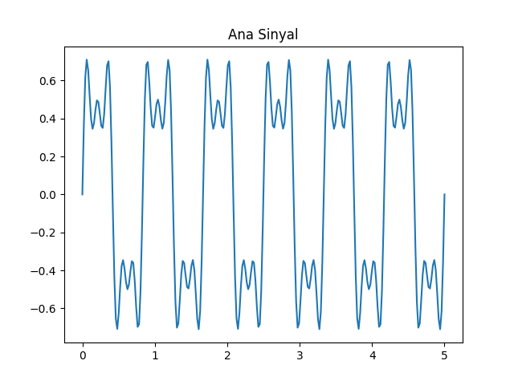
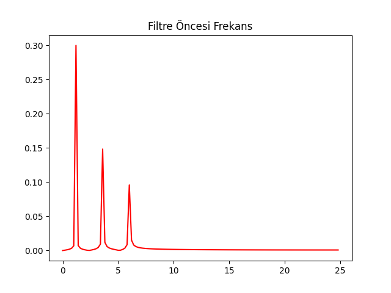
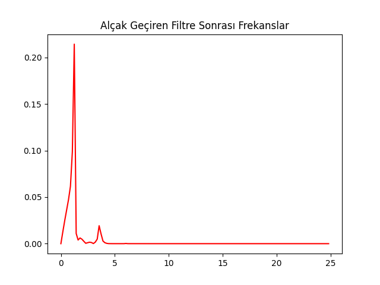
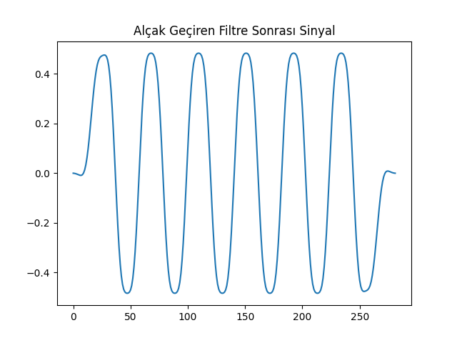
Yüksek Geçiren Filtre
Yüksek geçiren filtre elde etmek için herhangi bir \(f_c\) için tanımlı bir alçak geçiren filtreyi alıp katsayılarını negatife çevirmek yeterli (bir de ortada sıfır noktasında bir pozitif değer ekleniyor). Bu değişim o filtreyi \(f_c\) için yüksek geçiren hale getirir.
fc1 = 4
f2 = filt.sinc_filter_high(order, fc1, fs).T[0];
y2 = np.convolve(f2, y)
f=plt.figure()
plt.plot(np.arange(len(y2)), y2)
plt.title(u'Yüksek Geçiren Filtre Sonrası Sinyal')
plt.savefig('compscieng_1_24_10.png')
f=plt.figure()
filt.plotSpectrum(y2, fs)
plt.title(u'Yüksek Geçiren Filtre Sonrası Frekanslar')
plt.savefig('compscieng_1_24_09.png')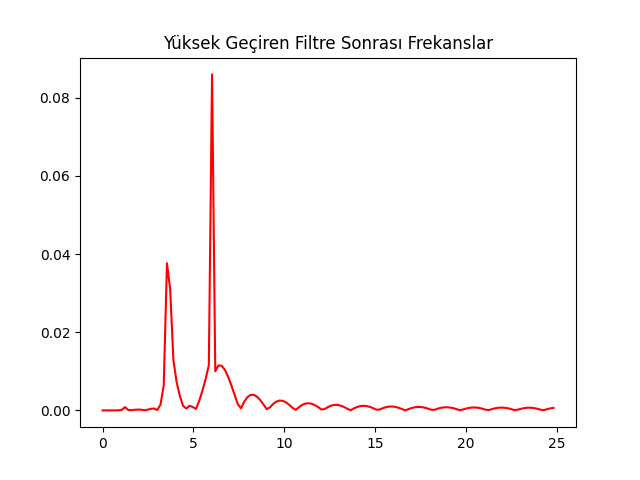

Bant Geçiren Filtre
\(f_{c1}\) ve \(f_{c2}\) frekansları arası haricindeki tüm diğer frekanslar elensin istiyorsak \(f_{c1}\) için alçak geçiren \(f_{c2}\) için yüksek geçiren filtre tanımlayıp bu iki filtreyi toplarız. Bu toplam bize bir bant reddi (bant-reject) filtresi verir. Ama biz bunun tersini istiyoruz, o zaman eldeki katsayıların üstteki bahsedilen yöntemle tersini alırsak bir bant geçiren filtre elde ederiz.
fc1 = 4.0
fc2 = 4.5
f3 = filt.sinc_filter_band(order, fc1, fc2, fs);
y3 = np.convolve(f3, y)
f=plt.figure()
plt.title(u'Bant Geçiren Filtre Sonrası Sinyal')
plt.plot(np.arange(len(y3)), y3)
plt.savefig('compscieng_1_24_12.png')
f=plt.figure()
filt.plotSpectrum(y3, fs)
plt.title(u'Bant Geçiren Filtre Sonrası Frekanslar')
plt.savefig('compscieng_1_24_11.png')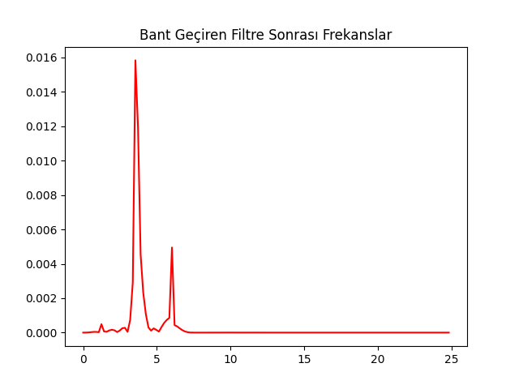
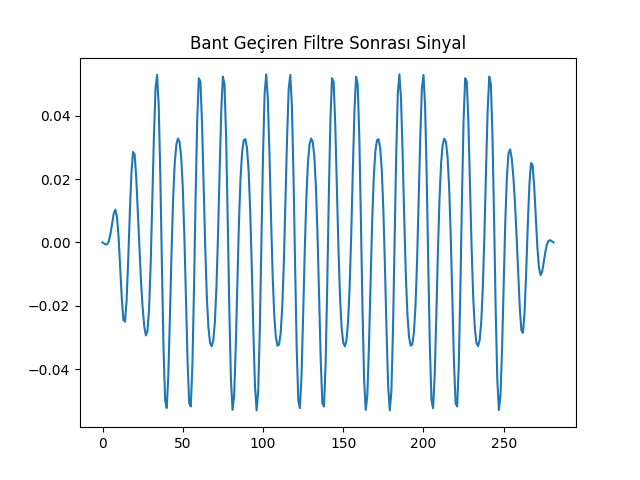
Karşılaştırma amaçlı olarak scipy.signal.butter
kütüphane çağrısı ile bir Butterworth bant geçiren filtreyi de aynı veri
üzerinde işlettik.
from scipy.signal import butter, lfilter
def butter_bandpass(lowcut, highcut, fs, order):
nyq = 0.5 * fs
low = lowcut / nyq
high = highcut / nyq
b, a = butter(order, [low, high], btype='band')
return b, a
def butter_bandpass_filter(data, lowcut, highcut, fs, order):
b, a = butter_bandpass(lowcut, highcut, fs, order=order)
y = lfilter(b, a, data)
return y
low = 4; high=4.5
yb = butter_bandpass_filter(y, low, high, fs, order=1)
plt.title(u'Bant Geçiren (Butterworth) Filtre Sonrası Sinyal')
plt.plot(np.arange(len(yb)), yb)
plt.savefig('compscieng_1_24_13.png')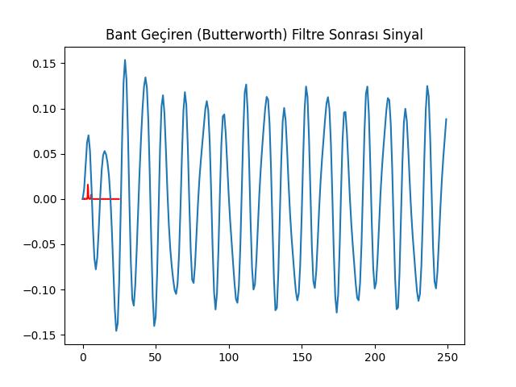
Not: Butterworth filtreleri FIR değil IIR filtreleri (bir sonraki yazının konusu).
Kaynaklar
[1] ElAli, Discrete Systems and Digital Signal Processing with Matlab, 2nd Edition
[2] Smith, The Scientist and Engineer’s Guide to Digital Signal Processing, 2nd Ed.
[3] Sierra, Digital Signal Processng with Matlab Examples Volume 1